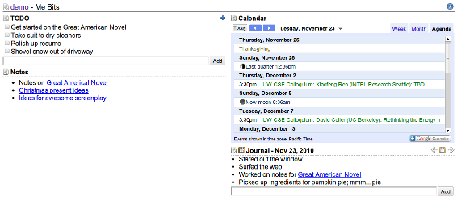
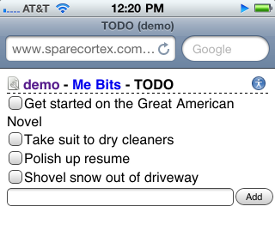
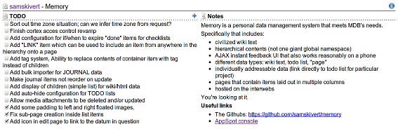

Spare Cortex is a wiki that has been souped up with personal and project information management features.
|
 Use Spare Cortex as a personal information manager. Keep track of task lists, daily accomplishments, project notes, even embed your calendar. Live demo. |
 Bookmark individual sections for quick access on mobile devices. |
|
 Use Spare Cortex to manage information for personal or professional projects. Keep track of project notes, task lists and anything else you need. Live demo. |